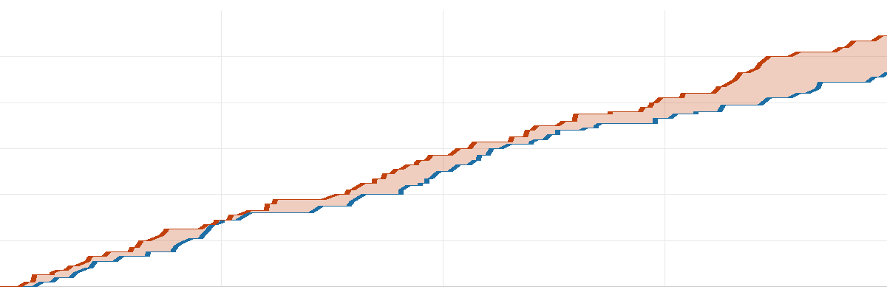
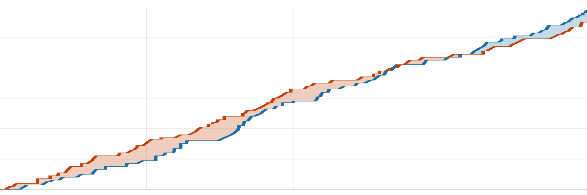

去球吧·NBA 每日战报
2026-11-02美国时间
共 15 场 ｜ 每行格式：客队 比分 : 比分 主队
今天 15 场，最狠的一刻出在鹈鹕 135-134 灰熊：Fears 剩 7.3 秒投进反超球，此后对手再没得分，全场交替领先 16 次。
焦点球星
库里34分6板 7助·勇士 胜 太阳
东契奇42分7板 13助·湖人 胜 热火
詹姆斯15分7板 9助·76人 胜 公牛
杜兰特12分3板 3助·火箭 胜 凯尔特人
文班亚马12分11板 5助·马刺 胜 爵士
杨瀚森（未出场）开拓者 胜 掘金
今日最胶着
| 1 | 2 | 3 | 4 |
| 分节 | 26-30 | 33-18 | 31-36 | 27-28 |
雷霆只赢 5 分，最后时刻才定胜负。
| 雷霆 | 亚历山大43分3板8助·阿贾伊·米切尔20分5板1助·Williams12分3板1助 |
| 骑士 | 米切尔17分5板11助·Thomas17分5板1助·莫布利16分7板4助 |
|
命中率 |
三分 |
篮板 |
助攻 |
失误 |
| 雷霆 |
43 | 39 | 54 | 18 | 8 |
| 骑士 |
44 | 37 | 46 | 31 | 8 |
北京 08:00 开球 ｜ 雷霆 5-2 ｜ 骑士 4-3
| 1 | 2 | 3 | 4 |
| 分节 | 27-24 | 38-30 | 33-21 | 26-16 |
活塞最多领先 33 分，最终赢 33 分。
| 活塞 | 坎宁安33分5板7助·邓肯·罗宾逊24分2板3助·奥萨尔·汤普森14分6板4助 |
| 黄蜂 | 布兰登·米勒17分1板4助·里德13分6板2助·James11分4板3助 |
|
命中率 |
三分 |
篮板 |
助攻 |
失误 |
| 活塞 |
57 | 49 | 37 | 30 | 15 |
| 黄蜂 |
38 | 30 | 44 | 19 | 27 |
北京 08:30 开球 ｜ 活塞 6-1 ｜ 黄蜂 3-5
| 1 | 2 | 3 | 4 |
| 分节 | 37-29 | 31-27 | 19-23 | 21-25 |
全场交替领先 4 次、打平 4 次，老鹰最后阶段才拉开 4 分。
| 老鹰 | 亚历山大-沃克34分4板4助·Dort14分2板·Kispert14分1板 |
| 步行者 | Huff22分8板2助·Jackson20分7板3助·Smith19分4板10助 |
|
命中率 |
三分 |
篮板 |
助攻 |
失误 |
| 老鹰 |
39 | 45 | 49 | 30 | 16 |
| 步行者 |
48 | 24 | 39 | 22 | 19 |
北京 08:30 开球 ｜ 老鹰 4-4 ｜ 步行者 2-6
| 1 | 2 | 3 | 4 |
| 分节 | 21-27 | 23-24 | 35-24 | 11-28 |
尼克斯最多领先 16 分，最终赢 13 分。
| 篮网 | 兰德尔21分11板2助·小波特18分5板2助·Traore17分3板4助 |
| 尼克斯 | Shamet22分1板1助·布伦森19分2板6助·阿努诺比18分4板2助 |
|
命中率 |
三分 |
篮板 |
助攻 |
失误 |
| 篮网 |
38 | 34 | 38 | 20 | 16 |
| 尼克斯 |
41 | 39 | 43 | 24 | 16 |
北京 08:30 开球 ｜ 篮网 1-6 ｜ 尼克斯 3-4
| 1 | 2 | 3 | 4 |
| 分节 | 28-33 | 32-26 | 19-9 | 24-26 |
全场交替领先 11 次、打平 12 次，奇才最后阶段才拉开 9 分。
| 奇才 | 安东尼·戴维斯27分9板1助·凯肖恩·乔治22分4板5助·Dybantsa21分5板2助 |
| 魔术 | 瓦格纳24分3板6助·贝恩20分3板3助·Cain10分3板1助 |
|
命中率 |
三分 |
篮板 |
助攻 |
失误 |
| 奇才 |
53 | 38 | 35 | 26 | 16 |
| 魔术 |
46 | 28 | 32 | 23 | 18 |
北京 08:30 开球 ｜ 奇才 4-3 ｜ 魔术 2-5
| 1 | 2 | 3 | 4 |
| 分节 | 23-30 | 36-34 | 20-26 | 28-36 |
76人最多领先 22 分，最终赢 19 分。
| 公牛 | Wilson24分7板4助·诺曼·鲍威尔18分3板·Smith13分7板4助 |
| 76人 | 马克西26分4板11助·杰伦·布朗25分11板5助·埃奇科姆21分3板5助 |
|
命中率 |
三分 |
篮板 |
助攻 |
失误 |
| 公牛 |
43 | 26 | 42 | 26 | 15 |
| 76人 |
53 | 35 | 47 | 36 | 14 |
北京 08:30 开球 ｜ 公牛 1-6 ｜ 76人 7-1
| 1 | 2 | 3 | 4 |
| 分节 | 19-18 | 35-35 | 27-21 | 34-26 |
国王最多领先 19 分，最终赢 15 分。
| 国王 | Acuff25分5板6助·蒙克24分1板7助·拉文23分4板1助 |
| 独行侠 | 加福德20分7板·Clayton20分1板2助·弗拉格17分4板6助 |
|
命中率 |
三分 |
篮板 |
助攻 |
失误 |
| 国王 |
52 | 44 | 42 | 25 | 20 |
| 独行侠 |
41 | 21 | 35 | 19 | 16 |
北京 09:00 开球 ｜ 国王 1-6 ｜ 独行侠 4-3
加时准绝杀Fears 剩 7.3 秒投进反超球，此后对手再没得分
| 1 | 2 | 3 | 4 | OT |
| 分节 | 34-31 | 25-31 | 41-33 | 24-29 | 11-10 |
加时赛
全场交替领先 16 次、打平 8 次，鹈鹕最后阶段才拉开 1 分。
| 鹈鹕 | 锡安25分11板4助·Matkovic25分6板1助·Queen20分7板5助 |
| 灰熊 | Jerome40分5板5助·Boozer18分9板5助·Wells16分3板3助 |
|
命中率 |
三分 |
篮板 |
助攻 |
失误 |
| 鹈鹕 |
48 | 38 | 47 | 27 | 8 |
| 灰熊 |
52 | 45 | 49 | 30 | 16 |
北京 09:00 开球 ｜ 鹈鹕 3-4 ｜ 灰熊 6-1
今日最佳一球
鹈鹕 Fears 准绝杀
鹈鹕 135-134 灰熊 · 加时
| 1 | 2 | 3 | 4 |
| 分节 | 18-29 | 29-19 | 29-32 | 24-32 |
全场交替领先 5 次、打平 3 次，森林狼最后阶段才拉开 12 分。
| 雄鹿 | 希罗21分6板3助·哈克斯19分8板2助·迈尔斯·特纳13分5板2助 |
| 森林狼 | 拉梅洛·鲍尔34分6板3助·Dosunmu19分12板8助·麦克丹尼尔斯13分6板3助 |
|
命中率 |
三分 |
篮板 |
助攻 |
失误 |
| 雄鹿 |
38 | 31 | 53 | 24 | 17 |
| 森林狼 |
43 | 36 | 59 | 23 | 11 |
北京 09:00 开球 ｜ 雄鹿 1-6 ｜ 森林狼 5-3
今日最平淡
| 1 | 2 | 3 | 4 |
| 分节 | 29-29 | 21-28 | 23-25 | 20-27 |

凯尔特人火箭横轴为比赛进程
火箭最多领先 18 分，最终赢 16 分。
| 凯尔特人 | 塔图姆19分6板9助·克塔16分6板1助·Garza14分3板 |
| 火箭 | 申京26分7板10助·小贾巴里·史密斯14分10板·阿门·汤普森14分3板3助 |
|
命中率 |
三分 |
篮板 |
助攻 |
失误 |
| 凯尔特人 |
39 | 29 | 38 | 20 | 16 |
| 火箭 |
54 | 40 | 36 | 34 | 14 |
北京 09:30 开球 ｜ 凯尔特人 5-2 ｜ 火箭 7-1
| 1 | 2 | 3 | 4 |
| 分节 | 16-27 | 33-32 | 20-35 | 28-25 |
马刺最多领先 26 分，最终赢 22 分。
| 爵士 | 马尔卡宁22分8板3助·Peterson14分4板6助·Hayes9分5板 |
| 马刺 | Harper17分7板8助·卡斯尔16分5板4助·Johnson15分7板1助 |
|
命中率 |
三分 |
篮板 |
助攻 |
失误 |
| 爵士 |
35 | 35 | 53 | 16 | 11 |
| 马刺 |
46 | 34 | 53 | 27 | 12 |
北京 09:30 开球 ｜ 爵士 1-6 ｜ 马刺 5-2
| 1 | 2 | 3 | 4 |
| 分节 | 19-31 | 39-35 | 27-21 | 33-23 |

开拓者掘金横轴为比赛进程
开拓者一度落后 14 分，翻盘赢 8 分。
| 开拓者 | 阿夫迪亚28分3板5助·Lillard20分6板6助·克林根17分18板3助 |
| 掘金 | 穆雷35分5板6助·约基奇26分9板8助·布劳恩14分3板3助 |
|
命中率 |
三分 |
篮板 |
助攻 |
失误 |
| 开拓者 |
47 | 37 | 53 | 30 | 16 |
| 掘金 |
47 | 35 | 37 | 24 | 12 |
北京 10:00 开球 ｜ 开拓者 5-1 ｜ 掘金 3-3
今日最大逆转
| 1 | 2 | 3 | 4 |
| 分节 | 31-19 | 26-32 | 36-42 | 20-23 |
勇士一度落后 17 分，翻盘赢 3 分。
| 太阳 | 布克26分3板5助·迈尔斯·布里奇斯21分6板3助·狄龙·布鲁克斯18分8板4助 |
| 勇士 | 库里34分6板7助·波杰姆斯基20分3板2助·Bassey19分8板1助 |
|
命中率 |
三分 |
篮板 |
助攻 |
失误 |
| 太阳 |
47 | 37 | 37 | 28 | 15 |
| 勇士 |
43 | 31 | 44 | 23 | 13 |
北京 11:00 开球 ｜ 太阳 1-4 ｜ 勇士 5-3
| 1 | 2 | 3 | 4 |
| 分节 | 22-33 | 30-30 | 26-28 | 47-27 |
猛龙一度落后 16 分，翻盘赢 7 分。
| 猛龙 | 奎克利27分4板2助·巴雷特26分6板3助·斯科蒂·巴恩斯22分15板8助 |
| 快船 | Sanders26分4板3助·Jackson19分8板2助·加兰16分4板8助 |
|
命中率 |
三分 |
篮板 |
助攻 |
失误 |
| 猛龙 |
52 | 28 | 41 | 26 | 13 |
| 快船 |
46 | 37 | 38 | 29 | 15 |
北京 11:00 开球 ｜ 猛龙 4-3 ｜ 快船 1-6
| 1 | 2 | 3 | 4 |
| 分节 | 30-37 | 42-42 | 21-32 | 24-27 |
湖人最多领先 24 分，最终赢 21 分。
| 热火 | 字母哥30分12板7助·克莱·汤普森19分1板1助·阿德巴约16分9板4助 |
| 湖人 | 东契奇42分7板13助·里夫斯27分2板5助·凯斯勒15分15板2助 |
|
命中率 |
三分 |
篮板 |
助攻 |
失误 |
| 热火 |
51 | 39 | 34 | 28 | 19 |
| 湖人 |
57 | 44 | 41 | 39 | 16 |
北京 11:00 开球 ｜ 热火 2-5 ｜ 湖人 6-2
明日休战
美国时间 11月3日（周二） 全联盟没有比赛 —— 美国选举日，联盟当天清空赛程，官方说法是让球员和球迷有时间去投票。
下一个比赛日 · 11月4日（周三）
76人@活塞
北京时间 11月5日 08:00 ｜ 活塞主场
ESPN 全美直播；两队战绩咬在一起（7胜1负 / 6胜1负）；詹姆斯 出战
战绩 7胜1负 / 6胜1负
另外这几场
森林狼@火箭北京时间 11月5日 09:30
独行侠@马刺北京时间 11月5日 10:30
湖人@国王北京时间 11月5日 11:00
开拓者@太阳北京时间 11月5日 10:00
那天全联盟 14 场
去球吧 ｜ 每天一份 NBA 战报，只写场上发生的事
本文基于公开赛事数据独立撰写，与 NBA 及任何转播平台无关联。
比赛日 2026-11-02（美国时间）｜ 数据来源：ESPN